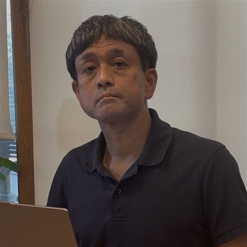
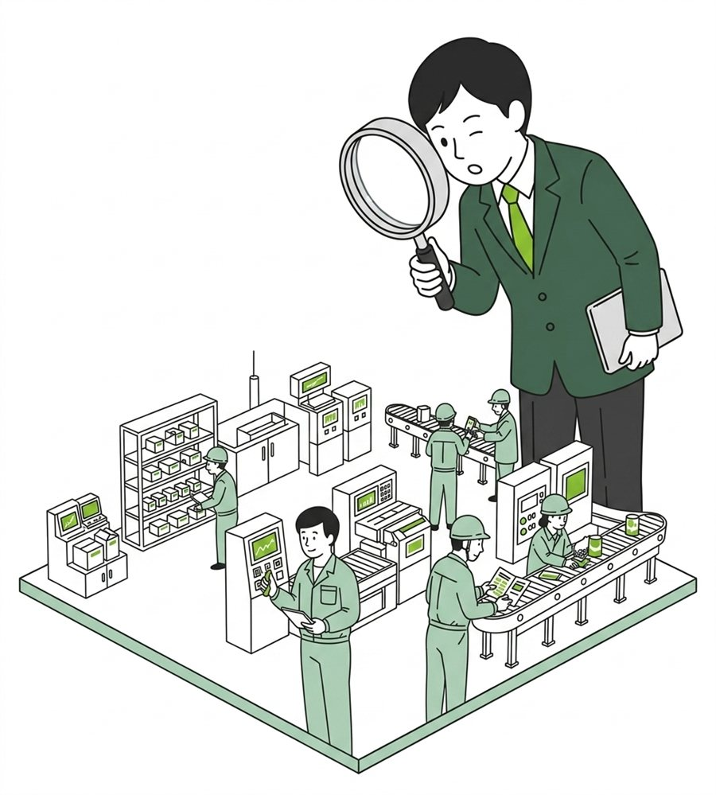
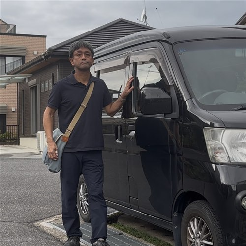

これなら出来る！これで十分！
「60点の工場保全」を、
完全中立で支援します。
電気・制御・保全から、生産性向上・DX、会社のしくみづくりや戦略まで。 工場に関わることは、まるごとこの一人にご相談いただけます。

お問い合わせ・ご相談内容の確認だけでは料金は発生しません。料金が発生するのは、実際に支援(1コマ)をご依頼いただいてからです。

現場に眠る課題を、一緒に見つけます。
こうばサポが選ばれる理由
請負でも仲介でもない、現場に一番近い「相談相手」という立ち位置です。
現場で生きる支援
成果物は製品でも報告書でもなく「現場が求める技術支援」。実践でき、継続できる内容を一緒に考えます。
完全中立
業者紹介料や販売マージンを一切受け取らない立場だから、特定製品・業者への誘導はなし。お客様の利益だけを考えたご提案ができます。
リアルな現場技術
設備設計・保全・省エネ・DX・トラブル解析・安全対策など、30年以上現在進行形で携わる技術者が対応。
多様な支援方法
ヒアリングだけでなく現場調査・協働も。技術教育、勉強会、セミナーなどのご要望にも対応します。
場所・時間に柔軟
全国対応可能。Webミーティング・電話に加え、突発的な相談もLINEトーク等で対応します。
三方の知見
メーカー・工事業者・コンサルタント、すべての立場での実務経験があるからこそ、それぞれの視点を横断した現実的なご提案ができます。
「60点の工場保全」という考え方
100点満点の理想論をめざす客観的な評価には、あまり意味がありません。 自社のリスク許容度・人材配分・効率という観点から、現場に本当に役立つ現実解を考える ―― それが「60点の工場保全」です。
10点満点で6点のラインを「合格点」とする、現場に一番近い人の主観による「これで大丈夫」という基準。 目指すのは「止まらない工場」ではなく、想定外のトラブルで致命傷を受けない工場をつくることです。
5要素で現状を見える化するイメージ図（詳細は公式サイトで解説）
支援内容と料金の目安
診断・提案から、教育・トラブル対応・セミナーまで柔軟に対応します。
診断・改善提案
省エネ・生産性向上・保全・潜在装置リスク・安全などの診断、改善提案。まずは簡易診断からを推奨。
技術支援・教育
新たな技術案件の計画や、若手技術者の育成にかかる時間・要望にフレキシブルに対応します。
不具合対応支援
頻発する設備トラブル、原因不明の不具合のご相談を受付。電話等の遠隔対応も可能です。
オンライン相談
電話・LINE・Zoom等でのオンライン相談。録画データの送付も可能で、遠方でも実施しやすい形式です。
対面・現場対応
対面や現場を見ながらのご相談。その場で解決できる内容であればすぐに回答します。
会議・セミナー・勉強会
社内の開発・プロジェクト会議への第三者視点の参加や、各種セミナー・勉強会に対応します。
ご依頼のイメージ
支援は1コマ2.5時間保証（実働・移動時間は別）。初回1時間はサービス説明と課題相談に充てます。支援後3ヶ月は電話・メールの相談が無料です。全国対応（訪問時は別途出張サービス費）。
回数・進め方・ご予算感は、内容に応じて柔軟にご相談に応じます。まずはお気軽にお問合せください。代表プロフィール

髙橋 憲久（たかはし のりひさ）
滋賀県栗東市を拠点に、工場の電気保全・生産設備・省エネ・生産性向上・DXの技術アドバイザーとして活動。 30年以上にわたり一貫して「工場の現場」と向き合い、大手メーカーから中小工場まで多様な現場対応で培ってきた知見を活かし、 規模の大小を問わず工場経営者・現場技術者の良き相談相手となることを目指しています。
大手化学メーカー系エンジニアリング会社を経て、工場向け総合エンジニアリング会社に約30年在籍。 2026年4月より「こうばサポ」として活動開始。滋賀県産業支援プラザ登録専門家、経済産業省SII省エネルギー診断事業登録専門家。
支援事例・発信
実際に取り組んだ内容は「こうばラボ」でも発信しています。